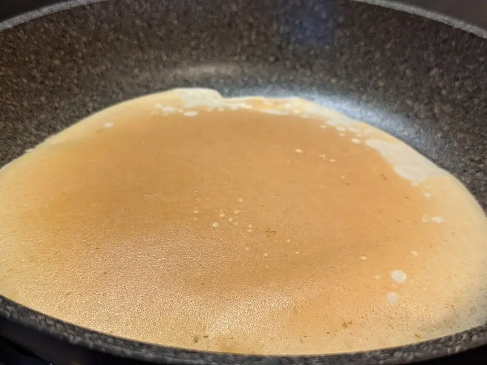

Фото: Shisma, CC BY 4.0

Тонкие блины на кефире с дырочками
Кружевные блины на кефире с кипятком, не рвутся и легко переворачиваются
50 мин4 порц.433 ккал на порциюБ 14 · Ж 17 · У 55Русская кухня
Продукты на 4 порц.
- Кефир2,5 стак.
- Вода1 стак.
- Яйцо куриное2 шт
- Мука пшеничная1,5 стак.
- Сахар1 ст. л.
- Соль2 щеп.
- Сода0,5 ч. л.
- Растительное масло3 ст. л.
- Сливочное масло по желанию30 г
Как готовить
- Взбейте венчиком яйца с сахаром и солью 1 минуту, влейте кефир комнатной температуры.
- Всыпьте муку частями и перемешайте до гладкости без комков. Тесто будет густым.
- Вскипятите воду, растворите в ней соду и тонкой струйкой влейте в тесто, быстро размешивая. Появятся пузырьки, это и даст дырочки.
- Добавьте 2 ст. л. масла, перемешайте и дайте тесту постоять 15 минут.
- Хорошо разогрейте сковороду на среднем огне, смажьте маслом перед первым блином.
- Налейте половник теста и сразу круговым движением распределите по дну. Жарьте 1-1,5 минуты, пока края не подсохнут и не порозовеют, переверните и жарьте ещё 30 секунд.
- Готовые блины складывайте стопкой и при желании смазывайте сливочным маслом.
Совет. Если блин рвётся при перевороте, добавьте в тесто 1-2 ст. л. муки. Если толстый, разбавьте ложкой кипятка.